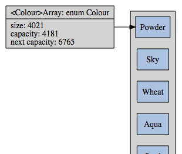
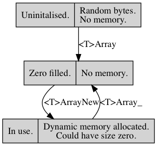

<T>array is a dynamic array that stores contiguous ARRAY_TYPE. When modifying the array, to ensure that the capacity is greater then or equal to the size, resizing may be necessary. This incurs amortised cost and any pointers to this memory may become stale.
<T>array is not synchronised. Errors are returned with errno. The parameters are preprocessor macros. Assertions are used in this file; to stop them, define NDEBUG before assert.h.
<T> that satisfies C naming conventions when mangled and a valid tag-type associated therewith; required. <PT> is private, whose names are prefixed in a manner to avoid collisions.<A> that satisfies C naming conventions when mangled and a function implementing <PA>to_string; gives <T>array_to_string contained in ToString.h. There can be multiple to string traits, but only one can omit ARRAY_TO_STRING_NAME.assert. Can only be defined once per array. Must be defined equal to a (random) filler function, satisfying <PT>action. Output will be shown with the to string trait in which it's defined; provides tests for the base code and all later traits.<C> that satisfies C naming conventions when mangled and a function implementing, for ARRAY_IS_EQUAL <PT>bipredicate that establishes an equivalence relation, or for ARRAY_COMPARE <PT>compare that establishes a total order. There can be multiple contrast traits, but only one can omit ARRAY_COMPARABLE_NAME.typedef int(*<PT>bipredicate)(const <PT>type *, const <PT>type *);
Returns a boolean given two read-only <T>.
typedef int(*<PT>compare)(const <PT>type *a, const <PT>type *b);
Three-way comparison on a totally order set; returns an integer value less then, equal to, greater then zero, if a < b, a == b, a > b, respectively.
struct <T>array;
Manages the array field data, which is indexed up to size. To initialise it to an idle state, see <T>array, ARRAY_IDLE, {0} (C99,) or being static.

| Modifiers | Function Name | Argument List |
|---|---|---|
| static void | <T>array | a |
| static void | <T>array_ | a |
| static int | <T>array_reserve | a, min |
| static <PT>type * | <T>array_buffer | a, buffer |
| static <PT>type * | <T>array_new | a |
| static <PT>type * | <T>array_update_new | a, update_ptr |
| static void | <T>array_remove | a, datum |
| static void | <T>array_lazy_remove | a, datum |
| static void | <T>array_clear | a |
| static <PT>type * | <T>array_peek | a |
| static <PT>type * | <T>array_pop | a |
| static size_t | <T>array_clip | a, i |
| static void | <T>array_keep_if | a, keep, destruct |
| static void | <T>array_trim | a, predicate |
| static void | <T>array_each | a, action |
| static void | <T>array_if_each | a, predicate, action |
| static <PT>type * | <T>array_any | a, predicate |
| static void | <T>array_test | |
| static void | <T>array<C>comparable_test | |
| static size_t | <T>array<C>lower_bound | a, value |
| static size_t | <T>array<C>upper_bound | a, value |
| static void | <T>array<C>sort | a |
| static void | <T>array<C>reverse | a |
| static void | <T>array<C>compactify | a, merge |
static int <T>array_reserve(struct <T>array *const a, const size_t min)
Ensures min of a.
errno will be set.size_t or realloc doesn't follow POSIX.static <PT>type *<T>array_buffer(struct <T>array *const a, const size_t buffer)
Adds buffer un-initialised elements at the back of a.
a, where buffer objects are, or null and errno will be set for buffer != 0.static <PT>type *<T>array_new(struct <T>array *const a)
a.static <PT>type *<T>array_update_new(struct <T>array *const a, <PT>type **const update_ptr)
Returns a new un-initialised datum of a and updates update_ptr, which must be in a.
static void <T>array_remove(struct <T>array *const a, <PT>type *const datum)
Removes datum from a.
static void <T>array_lazy_remove(struct <T>array *const a, <PT>type *const datum)
Removes datum from a and replaces it with the tail.
static void <T>array_clear(struct <T>array *const a)
Sets a to be empty. That is, the size of a will be zero, but if it was previously in an active non-idle state, it continues to be.
static <PT>type *<T>array_peek(const struct <T>array *const a)
a is empty.static <PT>type *<T>array_pop(struct <T>array *const a)
a that is removed or null if the array is empty.static size_t <T>array_clip(const struct <T>array *const a, const long i)
i to an index in a from [0, a.size]. Negative values are implicitly plus a.size.static void <T>array_keep_if(struct <T>array *const a, const <PT>predicate keep, const <PT>action destruct)
For all elements of a, calls keep, and for each element, if the return value is false, lazy deletes that item, calling destruct if not-null.
a.size × keep × destruct)static void <T>array_trim(struct <T>array *const a, const <PT>predicate predicate)
Removes at either end of a of things that predicate returns true.
a.size × predicate)static void <T>array_each(struct <T>array *const a, const <PT>action action)
Iterates through a and calls action on all the elements. The topology of the list should not change while in this function.
a.size × action)static void <T>array_if_each(struct <T>array *const a, const <PT>predicate predicate, const <PT>action action)
Iterates through a and calls action on all the elements for which predicate returns true. The topology of the list should not change while in this function.
a.size × predicate × action)static <PT>type *<T>array_any(const struct <T>array *const a, const <PT>predicate predicate)
Iterates through a and calls predicate until it returns true.
predicate that returned true, or, if the statement is false on all, null.a.size × predicate)static void <T>array_test(void)
Will be tested on stdout. Requires ARRAY_TEST, ARRAY_TO_STRING, and not NDEBUG while defining assert.
static void <T>array<C>comparable_test(void)
Will be tested on stdout. Requires ARRAY_TEST, ARRAY_TO_STRING, and not NDEBUG while defining assert.
static size_t <T>array<C>lower_bound(const struct <T>array *const a, const <PT>type *const value)
a should be partitioned true/false with less-then value.
a that is not less then value.a.size)static size_t <T>array<C>upper_bound(const struct <T>array *const a, const <PT>type *const value)
a should be partitioned false/true with greater-than or equals value.
a that is greater then value.a.size)static void <T>array<C>sort(struct <T>array *const a)
Sorts a by qsort on ARRAY_COMPARE.
a.size \log a.size)static void <T>array<C>reverse(struct <T>array *const a)
Sorts a in reverse by qsort on ARRAY_COMPARE.
a.size \log a.size)static void <T>array<C>compactify(struct <T>array *const a, const <PT>biproject merge)
Tests equality for each consecutive pair of elements in a and, if true, surjects two one according to merge.
a.size)2016 Neil Edelman, distributed under the terms of the MIT License.